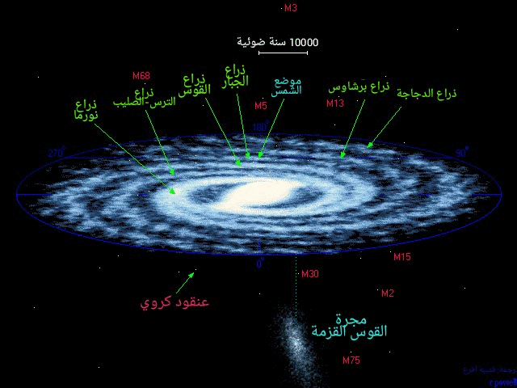
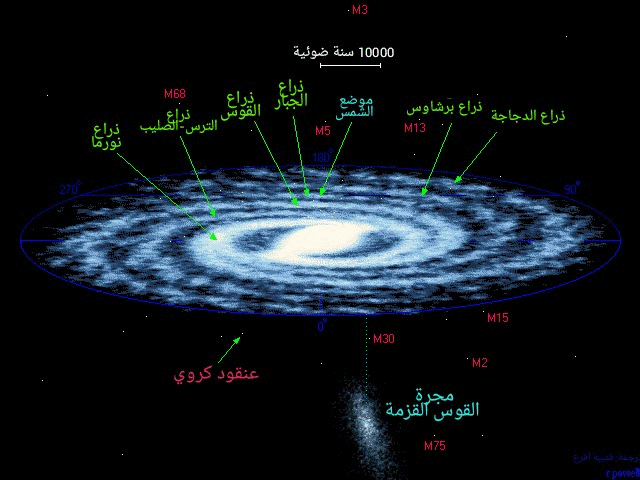
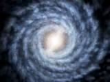
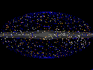
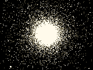

|  | ||
|
|
|
|
|  | ||
|
|
|
|
| خرائط إضافية | |
|---|---|
|  | خريطة إضافية تظهر فيها درب التبانة من منظور علوي، و في هذه الصفحة أيضا بيانات علمية حول البنية اللولبية لمجرتنا. |
|  | هذه خريطة للسماء بألمع نجومها و التي يبلغ عددها 9000 نجم، وفق إسقاط ذو إحداثيات مجرية. و يظهر فيها جميع الكوكبات المعروفة في السماء. |
| بيانات و مصنفات | |
|---|---|
|  | يحيط المجرات الضخمة هالة من العناقيد النجمية الكروية المتراصة، و يوجد ما يقارب 150 عنقودا كرويا معروفا حول مجرتنا و هنا لائحة بأسمائها. |
و هي أقرب مجرة معروفة إلى مجرتنا. على الرغم من حداثة اكتشافها و الذي يعود للعام 1995. تقع هذه المجرة في الجانب البعيد من مجرتنا حيث يحجب الغبار و الغاز بيننجمي الكثيفين رؤيتها. تبعد عنا تقريبا 78000 سنة ضوئية و يبلغ قطرها 10000 سنة ضوئية و تتم دورة حول مجرتنا في 1 بليون سنة!، و يعتقد بأنها لن تبقى طويلا ، فخلال الملايين القادمة من السنين سيتم تمزيقها أجزاء من قبل مجرتنا. تحتوي مجرة القوس على 100 مليون نجم. تقع مجرة القوس في الجانب نفسه و على نفس امتداد العنقود الكروي M54 و من غير الواضح فيما إذا كان يتبع هذه المجرة أم لا.
إن مجرة القوس القزمة ليست المجرة الوحيدة التي تعرضت للابتلاع من قبل درب التبانة، و لقد أثبت المسح الرقمي لمشروع سلوان Sloan Digital Sky Survey وفق تقارير تبين وجود مجاميع نجمية خارج درب التبانة و يعتقد أنها بقايا مجرات صغيرة تمزقت و ابتلعت من قبل مجرتنا درب التبانةمنذ بضعة بلايين من السنين الماضية. إن توزع هذه النجوم يظهر إثنين من المجاميع التي حجمها بضعة آلاف من السنين الضوئية و تبعد أكثر من 100 000 سنة ضوئية عن مركز مجرتنا.
أعلاه - رسم لجميع نجوم السماء البيضاء (B-V<0) و الأكثر لمعانا و التي يبلغ عددها 25000 نجم. و من خلاله يتبين لنا كيف تتوزع النجوم على امتداد مجرة درب التبانة. كما تظهر لنا هذه الخريطة محدودية المشهد من داخل المجرة. البقع الداكنة الكبيرة بالقرب من منتصف الصورة، تعود إلى تلك السدم الداكنة في كوكبتي الدلو Aquila و الحواء Ophiuchus.
أدناه - مشهد بالأشعة ما دون الحمراء باتجاه مركز مجرتنا تم التقاطه عبر المسح الثنائي الميكروني لكامل السماء Two-Micron All Sky Survey. فرؤيتنا لمجرة درب التبانة تتحسن كثيرا عبر نافذة الأشعة ما دون الحمراء.و في هذه الصورة يظهر جليا الغمامات الهائلة من الغبار التي تحجب الضوء المرئي لمجرتنا. تظهر مجرة القوس القزمة بصعوبة في هذه الصورة حيث نراها تمتدأسفل الانتفاخ المركزي باتجاه اليسار قليلا.